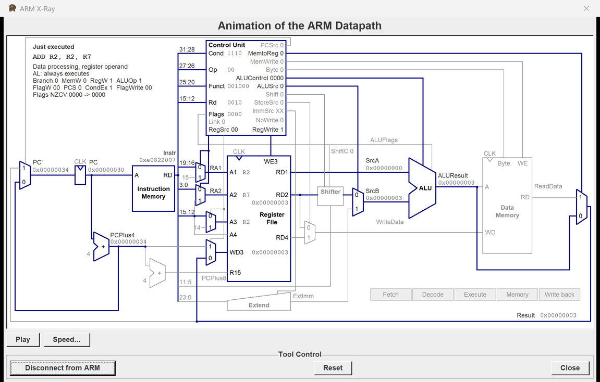
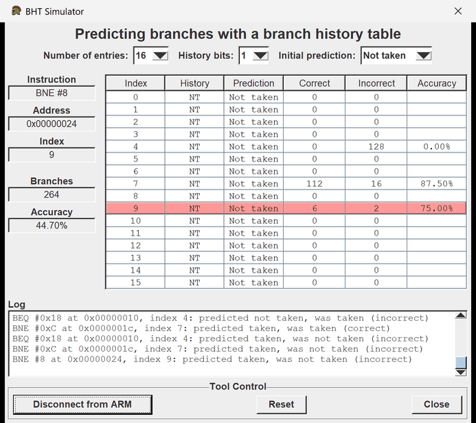
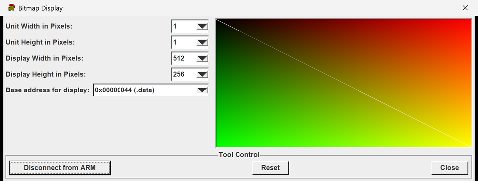
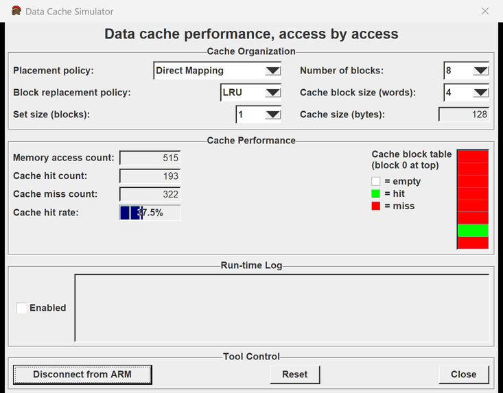
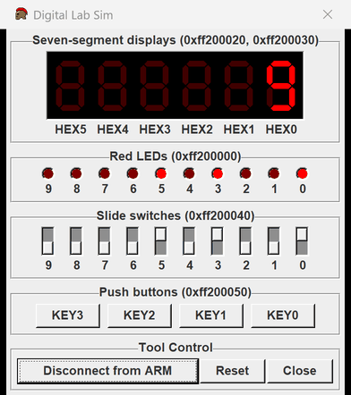
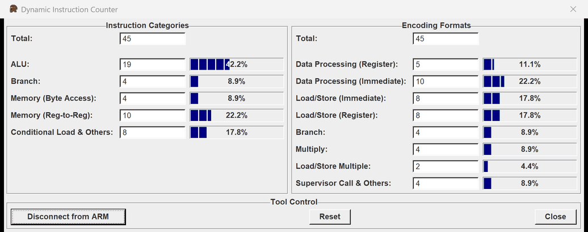
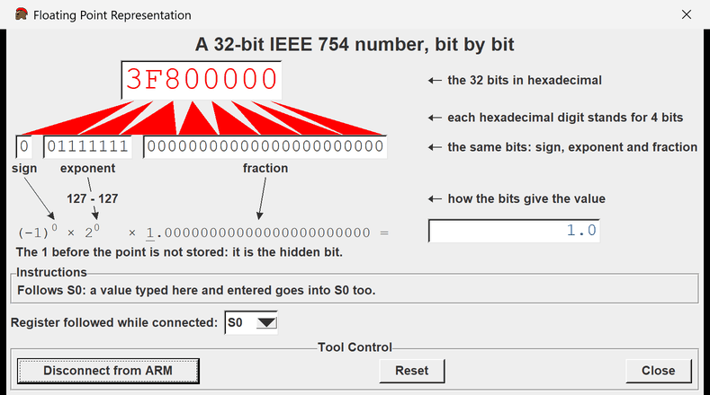
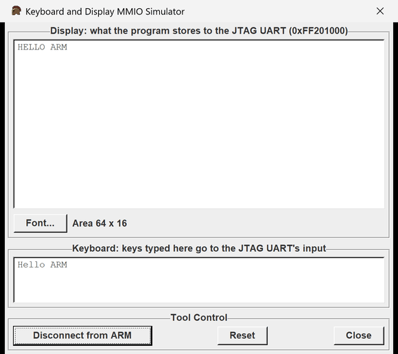
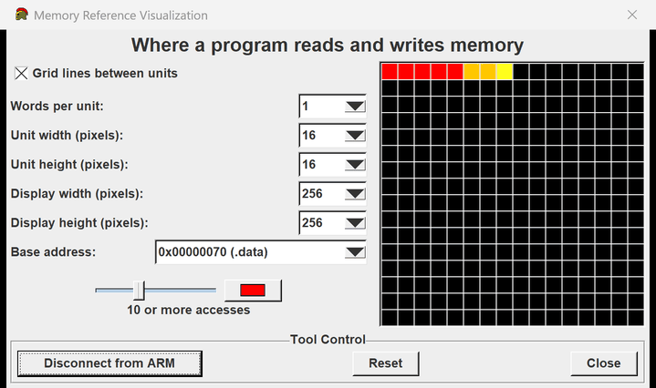

The Tools menu holds tools that show what a program does, each in a window of its own. Choose one in the list to read about it.
What every tool has ARM X-Ray BHT Simulator Bitmap Display Data Cache Simulator Digital Lab Sim Dynamic Instruction Counter Floating Point Representation Keyboard and Display MMIO Simulator Memory Reference Visualization Memory Map
What every tool has
- Each tool opens centred over the ARES window and does not block it. Several tools can be open at once; choosing an open tool again brings its window to the front.
- Connect to ARM: the tool observes the program from now on, also later programs. It can be connected before anything is assembled, and stays connected when the program is assembled again or its file is closed.
- Disconnect from ARM: the tool stops observing; what it shows stays.
- Reset: the tool's own numbers start again from zero. The program is not touched, except by Floating Point Representation, whose Reset also sets its register to 0.0.
- Close: closes the tool and disconnects it. Escape does the same.
- Return or Enter presses the focused button, else Connect to ARM.
- The numbers follow the program after every Step and several times a second while it runs.
A tool that is not connected costs nothing; a connected one can make a run at full speed take longer, as its page says.
ARM X-Ray

ARM X-Ray shows how the processor runs an instruction: which parts of the datapath it uses and what is on the wires. The diagram is a textbook's single-cycle ARM processor, with a few additions that real programs need. The textbook is Harris and Harris, Digital Design and Computer Architecture: ARM Edition.
Click Connect to ARM, then Step through the program. The diagram follows each instruction: the paths the instruction uses are dark blue and thick, the rest gray. On the wires stand PC, the instruction, the register numbers and values, the immediate, the ALU's result and flags, the memory address and data, and the result written back. The control unit shows every control signal: X means that its value does not matter for this instruction. The panel at the top left shows the instruction, its class, the condition check (for example NE: Z = 0, executes), the decoders' other signals, and the flags before and after.
Which instruction it shows: after Step, the instruction just executed, from the registers as they were before it ran. After Backstep and when a run stops, the instruction at PC, which runs next (after Backstep, the one undone). The line above the instruction says which. At a slow run speed every instruction is shown as Step shows it. At full speed the tool does nothing until the run stops, and costs nothing: it adds no hook to the program, connected or not. If Backstep while running keeps a history, a stop shows the last instruction executed. When the program has ended the tool says so, and it shows the instruction that a runtime error stopped.
A condition that fails stops the writes: PCSrc, RegWrite, MemWrite and FlagWrite are 0, and only the path of PCPlus4 to the PC is lit after the ALU.
Play walks through the five stages of the instruction shown, one at a time: Fetch, Decode, Execute, Memory and Write back. Each stage lights what it uses, and the values appear as the instruction reaches them. Play stops by itself after Write back, and at once when you click it again or Step or Backstep. Speed... sets how long each stage stays on the screen.
The additions to the textbook's diagram are these. The ALU has more operations: ALUControl has four bits, with EOR, BIC, RSB, MOV and MVN after the textbook's ADD, SUB, AND and ORR; NoWrite stops CMP, CMN and TST from writing a register. A shifter stands between RD2 and the ALUSrc multiplexer, for shifts by an immediate, RRX included: the signal Shift is 1 when it changes its input, and Extend rotates the 8-bit immediate. ShiftC writes C from the shifter or the rotated immediate, in a logical operation with S. A store with a register offset reads three registers: A4 and RD4 are a third read port, and StoreSrc takes WriteData from RD4. Byte makes the data memory move the low byte of LDRB and STRB. A negative offset subtracts. BL sets Link: two small multiplexers send 14 to A3 and PCPlus4 to WD3. BX, as in the return BX LR, reads Rm on the port of RD2; the ALU passes it on as for MOV, and the result goes to the PC. It writes no register, no memory and no flags. The example xray_tour.s (File > Open Example) uses only instructions of this datapath, so that every instruction it runs animates; its last line, a branch to itself, ends the program without running.
Whatever writes the PC, bit 0 of the address does not reach it. When that bit is 1 the processor goes on in Thumb code, and the panel says so.
Some instructions lie outside this datapath: ADC, SBC, RSC and TEQ; shifts by a register; S with Rd = 15; multiplies; SWP; LDM, STM, PUSH and POP; LDR and STR with write-back or post-indexing; halfword, doubleword and exclusive accesses; SVC; BLX, MOVW, MOVT, MRS, MSR, CLZ, NOP and other hints; floating point, coprocessors and NEON; and anything with condition 1111. For these the diagram stays gray, a note says why, and the panel lists what the instruction changed: registers and memory, or that it has not run yet. So a function that returns with POP {..., PC}, which is normal ARM, shows that return gray: POP is outside the datapath. A return with BX LR animates.
Reset clears the diagram until the program does something more. The tool stays connected when the program is assembled again or its file is closed.
BHT Simulator

The BHT Simulator shows how a branch history table predicts the conditional branches of the program: whether each one will branch (taken) or go on with the next instruction (not taken), and how often the predictions are right.
Click Connect to ARM, then run the program (Go, Step). The table follows the program, also while it runs at full speed. Disconnect from ARM stops the observing; the table stays. Close closes the tool and stops the observing.
The conditional branches are the B instructions with a condition: BEQ, BNE, BCS (BHS), BCC (BLO), BMI, BPL, BVS, BVC, BHI, BLS, BGE, BLT, BGT and BLE. B without a condition (or with AL) always branches and is not predicted, nor are BL, BX and the other instructions that change PC. A branch is taken when its condition holds for the flags N, Z, C and V as the branch runs: BNE after CMP R0, #3 is taken when R0 is not 3.
Number of entries (8, 16 or 32): the rows of the table. A branch uses the entry of its address divided by 4, modulo the number of entries: with 16 entries the branch at 0x0000001c uses entry 7, and so does the branch at 0x0000005c. Branches that share an entry disturb each other's predictions.
History bits (1 or 2): how many of its last outcomes an entry remembers. With 1 bit the entry predicts what its last branch did. With 2 bits its prediction changes only after two wrong predictions in a row, so a loop that ends now and then stays predicted taken.
Initial prediction (Not taken or Taken): the prediction of every entry at the start. Its history starts as if its branches had always done that.
Choosing another value in one of these lists starts the table again, as Reset does.
The table: Index, the entry's number; History, the outcomes it remembers, the oldest first (T taken, NT not taken); Prediction, what it predicts for its next branch; Correct and Incorrect, how many of its predictions were right and wrong; Accuracy, the share of right ones.
At the left: Instruction, Address and Index of the branch whose entry is coloured. While the program waits before a conditional branch (after Step, Pause or at a breakpoint), its entry is light yellow, and its Prediction is the one about to be checked. Otherwise the entry of the last branch executed is coloured: green when its prediction was right, light red when it was wrong. Branches and Accuracy are for all the branches executed.
The log has a line for each branch executed, with its entry, the prediction and what the branch did. It keeps the last 1,000 lines. While the program runs at full speed the table follows it and the log waits: it gets the newest lines when the run stops (Pause, a breakpoint, the end).
A branch counts once, when it runs. A breakpoint, Pause or Step that stops before it does not count it; it counts when the program goes on. A branch to itself whose condition holds (BEQ . for example) ends the program, as B . does, and does not count.
The table keeps what it has learned when the program is assembled again, reset (Reset, F12) or stepped back (Backstep undoes the instruction, but the branch was executed): only the tool's Reset and the lists above start it again. The tool stays connected when the program is assembled again or its file is closed.
While the tool is connected a run takes longer: ARES looks at each conditional branch as it runs, and each conditional branch in the program makes every instruction a little slower. A loop of 10,000,000 instructions that runs BNE 2,000,000 times takes a few seconds instead of a tenth of a second.
Bitmap Display

The Bitmap Display shows a part of memory as a picture: each word is one unit of the display, drawn in the colour its value gives.
Click Connect to ARM, then run the program (Go, Step): the display shows the words as memory holds them, also while the program runs at full speed. Disconnect from ARM stops following the program; the picture stays. Close closes the tool.
Colours: a word's value is 0x00RRGGBB, with red in bits 23-16, green in bits 15-8 and blue in bits 7-0; bits 31-24 do not matter. 0x00FF0000 is red, 0x0000FF00 green, 0x000000FF blue, 0x00FFFF00 yellow, 0x00FFFFFF white and 0 black.
Units: the word at the base address is the unit at the top left, the word 4 bytes on is the unit to its right, and so on to the end of the row; the next row goes on with the next word. With N units across, the unit in row r and column c (both counted from 0) shows the word at the base address + 4 x (N x r + c).
Unit Width in Pixels and Unit Height in Pixels: the size of a unit. Display Width in Pixels and Display Height in Pixels: the size of the whole display. The display is (display width / unit width) units across and (display height / unit height) units down: 512 x 256 pixels in units of 1 x 1 pixel are 512 x 256 units, 131,072 words (512 KB); in units of 8 x 8 pixels they are 64 x 32 units, 2,048 words.
Base address for display: where the words start. .data is the start of the program's data (its first section that is not code); heap is the first word after the program, where the memory that SVC #9 hands out begins. While a program is loaded the list shows their addresses in it, and the display follows them when another program is assembled. While no program is assembled the list shows them gray, with "no program assembled" instead of an address, and they cannot be chosen. Or type an address, also without a program: 0x and hexadecimal digits or decimal digits, and press Enter: a multiple of 4, with the whole display inside the DDR3 memory (0x00000000 to 0x3FFFFFFF). A wrong address rings the bell and the old one stays. With a typed address, a display size that would reach past the DDR3 memory rings the bell too and the old size stays.
What the display shows: while the tool is connected, the words as memory holds them after each step, during a run (up to about 30 times a second, see Speed), when the run stops, and after Backstep, Reset (F12) and Assemble: also words that system calls write (SVC #8 reading a string, for example), words Backstep puts back and the program's first values after Reset or Assemble. The tool stays connected when the program is assembled again or its file is closed; while no program is loaded the picture stays as it is. While the tool is not connected the picture stays too, and a change of a setting makes the display black.
The tool's Reset button draws the display again: from memory while the tool is connected to a program, else black.
On a scaled screen each pixel of the display is a square of whole screen pixels, as near to the screen's scale as whole pixels allow (2 x 2 at 200 % and 225 %), so the display keeps about its size and its units stay sharp. A display that would then not fit on the screen is drawn with fewer screen pixels per pixel, and with scroll bars when even one screen pixel per pixel does not fit.
Speed: the tool adds nothing to the instructions themselves. It reads the display's words when the window shows the program's state and draws only the rows that changed. A small display costs next to nothing. A large one takes longer (a display of 1024 x 1024 units has 4 MB to read, and a million pixels to draw when all of it changes), so while the program runs the tool skips refreshes until reading and drawing take a quarter of the time at most: the program runs at least three quarters as fast as without the tool, and the display still follows it a few times a second.
Data Cache Simulator

The Data Cache Simulator shows how a data cache would serve the program's loads and stores: which memory accesses find their word in the cache (hits), and which have to bring its block into the cache first (misses).
Choose the cache's organization, click Connect to ARM, then run the program (Go, Step): the numbers, the block table and the log follow the program, also while it runs at full speed. Disconnect from ARM stops the observing; what the tool shows stays. Reset empties the cache and the log and sets the numbers to 0. Close closes the tool and stops the observing.
Cache Organization
Placement policy: where a block of memory may be kept. Direct Mapping: in one block of the cache, which its address decides. Fully Associative: in any block. N-way Set Associative: in any block of one set of N blocks, which its address decides.
Block replacement policy: which block of a full set makes room for the new one. LRU: the one unused for the longest time. Random: one chosen at random; after Reset the choices are the same again, so a run can be repeated. A new choice applies from the next replacement on: the cache and the numbers stay.
Number of blocks and Cache block size (words): the blocks of the cache, and the words of 4 bytes in each block, 1 to 2048 of each.
Set size (blocks): the blocks of a set. Direct Mapping has sets of 1 block, Fully Associative one set of all the blocks, N-way Set Associative sets of 1, 2, 4 ... blocks, up to all of them.
Cache size (bytes): the number of blocks times the words in a block times 4.
Choosing a placement policy, a number of blocks, a block size or a set size starts again with an empty cache, the numbers at 0 and an empty log. A new placement policy or number of blocks also sets the set size to the first one its list offers.
Where an address goes: its block address is the address divided by the bytes of a block. The set is the block address modulo the number of sets, and the tag the block address divided by the number of sets. An access is a hit when a block of its set holds its tag. On a miss the tag goes into the set's first empty block, or, when the set is full, into the block the replacement policy chooses.
Cache Performance
Memory access count, Cache hit count and Cache miss count: the accesses since the tool was opened, reset or given a new organization, and how many of them were hits and misses. Cache hit rate: the hits as a share of the accesses.
The cache block table shows every block of the cache, block 0 at the top: white while it is empty, green when its last access was a hit, red when it was a miss. With more than 32 blocks the table has columns of 32 blocks, block 0 at the top left.
Run-time Log
Check Enabled to log each access from then on: its number, its address, tag and set, and on the next line whether it was a hit, or which block it filled or replaced (with LRU: the access that used that block last). The log keeps the newest 1,000 accesses. Checking or clearing Enabled empties the log, as Reset does.
What counts as a memory access
Each word that a load or store instruction reads or writes is one memory access, in DDR3 and in the on-chip memory where the stack is. A byte or a halfword is an access to the block of its word.
LDR, STR, LDRB, STRB, LDRH, STRH: one access, two when an unaligned one reaches into the next word.
LDRD and STRD, and VLDR and VSTR of a D register: two accesses, one for each word.
LDM, STM, PUSH and POP: one access for each register. VLDM, VSTM, VPUSH and VPOP: one for each S register, two for each D register.
SWP: two accesses (it reads its word, then writes it).
LDREX: one access. STREX: none when it fails without touching memory (no LDREX before it, another address, CLREX); two when it stores, or fails because the word changed after LDREX, as the processor ARES simulates reads the word before it writes it.
LDR R1, =value: one access, which reads value from the literal pool after the code. A number that fits a MOV instruction is no access: the assembler makes LDR R2, =40 a MOV.
Instruction fetches are not memory accesses here, nor are the system calls' own reads and writes (SVC #4 reading its string, SVC #8 storing the typed line), nor the DE1-SoC devices at 0xFF200000-0xFF20FFFF, the JTAG UART among them: a cache does not keep them.
The cache and its numbers stay when the program is assembled again, reset (Reset, F12) or stepped back (Backstep undoes an instruction, but its accesses happened), and when the program's file is closed; the tool stays connected. Only the tool's Reset and a new organization empty the cache.
While the tool is connected a run takes longer: ARES hands the tool every memory access. A loop of 10,000,000 instructions with 4,000,000 accesses takes about 3 seconds instead of a tenth of a second.
Digital Lab Sim

The Digital Lab Sim is the DE1-SoC board's red LEDs, its six seven-segment displays, its slide switches and its push buttons, at their DE1-SoC addresses and with their bit formats, as Intel's DE1-SoC Computer System documentation describes them. CPUlator's DE1-SoC system has the same devices.
Click Connect to ARM: from then on the program's loads and stores at the addresses below reach the board in this window. While the tool is not connected these devices are not simulated: writes to them are ignored, reads give 0, and ARES Messages warns once for each address. The tool stays connected when the program is assembled again or its file is closed. Close closes the tool, and the program no longer reaches the board.
Red LEDs LEDR9-LEDR0, at 0xFF200000: bit k of the word there lights LEDRk (LEDR9 is at the left, as on the board). The program writes the word and reads it back; bits 31-10 are ignored and read 0.
Seven-segment displays HEX5-HEX0: the word at 0xFF200020 drives HEX0 with bits 6-0, HEX1 with bits 14-8, HEX2 with bits 22-16 and HEX3 with bits 30-24; the word at 0xFF200030 drives HEX4 with bits 6-0 and HEX5 with bits 14-8. In the bits of a display, bit 0 lights the top segment, bit 1 the upper right one, bit 2 the lower right one, bit 3 the bottom one, bit 4 the lower left one, bit 5 the upper left one and bit 6 the middle one. The digits 0 to 9 are 0x3F, 0x06, 0x5B, 0x4F, 0x66, 0x6D, 0x7D, 0x07, 0x7F and 0x6F: with R0 = 0xFF200000, MOV R1, #0x3F and STR R1, [R0, #0x20] show 0 on HEX0 and switch HEX1 to HEX3 off. Bit 7 of each byte drives nothing. Both words are read back as they were written.
Slide switches SW9-SW0, at 0xFF200040: bit k of the word there is 1 while SWk is up. Click a switch to flip it. The program cannot write the switches.
Push buttons KEY3-KEY0, from 0xFF200050: a key is pressed while the mouse button is held down on it. The word at 0xFF200050 has bit k = 1 while KEYk is pressed. In the word at 0xFF20005C (Edgecapture) bit k becomes 1 when KEYk is pressed and stays 1 after it is let go, until the program writes any value there, which sets all four bits to 0: a program that polls this word sees every press, even a short one, as long as it writes there only after it read a bit that is 1: a write also forgets a press that came after the read. The word at 0xFF200058 (Interruptmask) keeps the four bits written there, but ARES has no interrupts and no timers: a program polls the keys.
Intel's documentation describes word accesses (LDR, STR). A byte or halfword access (LDRB, STRB, LDRH, STRH) reads or writes those bytes of the word: STRB to 0xFF200021 changes HEX1 alone. Writes to the switches and to the keys' word at 0xFF200050 are ignored, and so are the other words of these ports (such as 0xFF200004), which read 0. While the tool is connected the Data Segment shows the words at 0xFF200000-0xFF20005F as the program reads them.
Like a real board, the board keeps its state when the program is assembled again, reset (Reset, F12) or its file is closed: the LEDs and displays keep what the program wrote, and the switches stay where they are. Backstep undoes what the instruction stepped back wrote to the LEDs, displays, Interruptmask and Edgecapture; the switches and keys stay as they are. The tool's Reset button switches the board off: LEDs and displays dark, switches down, Interruptmask and Edgecapture 0.
A connected Digital Lab Sim costs nothing while the program does not use these devices; each access to them takes a little time.
Dynamic Instruction Counter

The Dynamic Instruction Counter counts the instructions the program executes, and sorts them into five categories and into the eight ARMv7 encoding formats.
Click Connect to ARM, then run the program (Go, Step): the counts follow the program, also while it runs at full speed. Disconnect from ARM stops the counting; the counts stay. Reset sets them to 0. Close closes the tool and stops the counting.
The window has two panels side by side: Instruction Categories at the left and Encoding Formats at the right. Each starts with Total: the instructions executed while the tool was connected, since it was opened or since its Reset button was pressed. Below it each category or format has its count, its share of Total in per cent with one decimal, and a bar filled as far as that share. Each instruction counts once in each panel, so the counts of a panel add up to Total.
The counts go on when the program is assembled again, reset (Reset, F12) or stepped back (Backstep undoes an instruction, but it was executed): only the tool's own Reset sets them to 0. The tool stays connected when the program is assembled again or its file is closed.
An instruction counts once it has completed. A breakpoint, Pause or Stop comes before an instruction, which counts when it runs. A system call that waits for typed input counts once, when it has its input. The instruction that ends the program with a runtime error does not count, nor does B . at the end of a program, where ARES stops. A conditional instruction counts whether its condition holds or not: the processor executes it either way.
Instruction Categories, the left panel:
ALU: the instructions that compute in the registers, with or without a condition, such as ADD R0, R1, R2, SUB R0, R0, #1, MOV R0, #5, CMP R0, #10, AND R0, R0, #15, LSL R0, R0, #2 and ADDNE R0, R0, #1, and the multiplies MUL, MLA and UMULL. MOV PC, LR counts here too, not as a branch. As DynARMic decides, every instruction of no other category is ALU as well: NOP, the floating-point instructions (VADD.F32 S0, S1, S2, VLDR, VPUSH), the forms of LDM and STM other than LDMIA and STMIA (STMDB R1!, {R2, R3}), and PUSH, POP, LDM and STM with a condition (POPNE {R4, R5}, LDMNE R1, {R2}). Two of them are not: STMDB SP!, {R4, R5} is PUSH {R4, R5}, of Memory (Reg-to-Reg), and PUSHNE {R4} is STRNE R4, [SP, #-4]!, a conditional store.
Branch: B, BL, BX and BLX, with or without a condition: BNE loop counts whether it branches or not.
Memory (Byte Access): the loads and stores of one byte, without a condition: LDRB R0, [R1], STRB R0, [R1, #1] and LDRSB R0, [R1].
Memory (Reg-to-Reg): the other loads and stores without a condition, which move registers to and from memory: of a word, a halfword, two words or several registers, such as LDR R0, [R1], STR R0, [R1, #4], LDR R0, =value, LDRH, STRH, LDRSH, LDRD, PUSH {R4, LR}, POP {R4, PC}, LDM and STM (LDMIA, STMIA). A value that MOV or MVN can give is not loaded: the assembler makes LDR R0, =5 into MOV R0, #5, an ALU instruction.
Conditional Load & Others: the loads and stores with a condition, such as LDRNE R0, [R1], STREQ R0, [R1, #4] and LDRNEB R0, [R1], and the system calls (SVC #1). BKPT is of this category too, but it ends the program with a runtime error, so it is never counted.
Encoding Formats, the right panel:
Data Processing (Register): an operation on registers only, such as ADD R0, R1, R2, MOV R4, R0, CMP R0, R1 or LSL R0, R0, R1.
Data Processing (Immediate): an operation with an immediate (#) operand, such as ADD R0, R0, #1, MOV R0, #5, CMP R0, #10, LSL R0, R0, #2 or ADD R4, R0, R0, LSL #1 (a shift by a constant). Instructions of no other format count as data processing too: as immediate when they have an immediate operand, else as register. NOP and VMUL.F32 S0, S0, S1 count as register, VLDR D1, [R1, #8] as immediate.
Load/Store (Immediate): LDR, STR, LDRB, STRB, LDRH, STRH ... with an immediate offset or none: LDR R0, [R1], STR R0, [R1, #4], LDR R0, =value. As DynARMic decides, an offset in R9 to R12, SP or LR (LDR R0, [R1, R9]) and an offset after the brackets (LDR R0, [R1], R2) count here too. A value that MOV or MVN can give is not loaded: the assembler makes LDR R0, =5 into MOV R0, #5, which counts as Data Processing (Immediate).
Load/Store (Register): an offset in a register: LDR R0, [R1, R2], STR R0, [R1, R2, LSL #2], LDR R0, [R1, -R2].
Branch: B, BL, BX and BLX, with or without a condition, as in Instruction Categories.
Multiply: MUL, MLA, MLS and the long multiplies SMULL, UMULL, SMLAL, UMLAL.
Load/Store Multiple: PUSH, POP, LDM and STM, such as PUSH {R4, LR}, POP {R4, PC} and POP {PC}. A PUSH of one register other than SP counts as Load/Store (Immediate): the assembler makes PUSH {LR} into STR LR, [SP, #-4]!, as the Text Segment's Basic column shows. LDR R4, [SP], #4 is POP {R4} and counts here.
Supervisor Call & Others: the system calls, such as SVC #1. BKPT is of this format too, but it ends the program with a runtime error, so it is never counted.
The Dynamic Instruction Counter and its classification come from DynARMic (GLSVLSI 2026), a dynamic ARM instruction counting tool, with its author's permission.
While the tool is connected a run takes a little longer: ARES counts each group of instructions that runs without a branch. A loop of 10,000,000 instructions takes about a second instead of a tenth of a second.
Floating Point Representation

Floating Point Representation shows how a floating-point number is stored in 32 bits, in the IEEE 754 single-precision format of the S registers: the bits in hexadecimal, the same bits in binary as the sign, the exponent and the fraction, and the value in decimal. Below the bits it shows how they give the value.
Change any of the five fields: type into it and press Enter, or move to another field (Tab, or a click). Every field then shows the new value. What a field cannot take rings the bell and stays in the field, which keeps the keyboard focus, with a note in Instructions, until it is corrected; Escape puts back what the field showed. A field left as it was keeps the value as it was: a NaN keeps its bits.
Hexadecimal: 1 to 8 digits 0-9 and A-F; 0x before them is allowed. Sign: one bit, 0 for a positive and 1 for a negative number. Exponent: up to 8 bits. Fraction: up to 23 bits. Fewer digits or bits than the field holds are filled up with zeros on the left. Decimal: a number such as 1.5, -0.25 or 6.02E23, or Infinity or NaN, rounded to the nearest single-precision value. Decimal values are written and read as in the Coproc 10 tab.
How the bits give the value. Each hexadecimal digit stands for 4 bits, as the red triangles show. For an exponent e from 1 to 254 the value is (-1)^sign × 2^(e - 127) × 1.fraction: the 1 before the point, underlined, is not stored (the hidden bit). The exponent 0 gives zero and the subnormal numbers: (-1)^sign × 2^(0 + 1 - 127) × 0.fraction. The exponent 255 (all ones) gives infinity when the fraction is 0, and NaN (not a number) otherwise.
Connect to ARM: the tool follows the register chosen at the bottom, S0 to S31, in the assembled program. It shows the register's value after each Step, while the program runs, and after Backstep, Reset and a change in the register tabs. While the program does not run (before it starts, paused or finished), a value typed into the tool goes into the register, and the Coproc 10 and Coproc 11 tabs show it at once (S2n and S2n+1 are the halves of Dn). While the program runs or waits for input, the fields only show the register. Connected before a program is assembled, or after its file was closed, the tool waits for one and changes no register. Choosing another register shows its value at once. Disconnect from ARM: the tool is a converter again, and the value stays.
Reset sets the value to 0.0; while the tool follows a program that does not run, it sets the register to 0.0 too, and while the program runs it changes nothing. The tool stays connected when the program is assembled again or its file is closed. Close closes the tool.
Following a register costs the program nothing while it runs: the tool reads the register only when the window shows the program's state.
Keyboard and Display MMIO Simulator

The Keyboard and Display MMIO Simulator is a keyboard and a text display on the JTAG UART of the DE1-SoC computer: the serial port at 0xFF201000 that programs use for text input and output through memory-mapped I/O (MMIO), reading and writing its registers as memory.
Click Connect to ARM, then run the program (Go, Step). While the tool is connected, the display shows what the program writes to the JTAG UART, and keys typed in the keyboard area go to the program. Disconnect from ARM stops this; what the tool shows stays. Close closes the tool.
Display: what the program stores to the JTAG UART's data register (0xFF201000) appears in the display at once, as it does in Run I/O, which keeps showing it: the low byte of each value stored, the bytes read as UTF-8 text. Text printed by system calls (SVC) appears only in Run I/O. Long lines wrap, and the display keeps the newest 100,000 characters. A program never has to wait before it writes: the JTAG UART's control register (0xFF201004) always reports room for 64 characters in its bits 31-16, and each character shows at once.
Keyboard: each key typed in the keyboard area goes at once to the JTAG UART's input and appears in the area. Return gives a line feed (10), Tab 9 and BackSpace 8, which also takes the last character away in the area; Paste types the clipboard's text. The program reads the input from the data register (0xFF201000), a byte at each read: bit 15 (RVALID) is 1 when a byte is there, bits 7-0 are the byte and bits 31-16 count the bytes still waiting after it. A key outside ASCII comes as its UTF-8 bytes. ARES has no interrupts: a program reads the data register again and again until RVALID is 1.
The keyboard area and Run I/O type into the same input: keys typed in Run I/O while the program runs go there too, and keys the program has not read when a read service (such as SVC #5 or SVC #8) waits become the start of the line it reads. While a read service waits for its line, type the line in Run I/O. The keyboard area takes keys while the tool is connected and a program is assembled and ready, running or paused; at other times a key rings the bell.
Two characters do more on the display. A form feed (12) clears it. A bell (7) moves the display's cursor to a column and a row given in the other bits of the word stored with it: the column in bits 31-20 and the row in bits 19-8 (store the word with STR; a byte stored with STRB moves the cursor to column 0, row 0). Column 0, row 0 is the top left corner; a column or row past the edge counts as the last one.
From the first bell on, the display is a grid of 64 columns and 16 rows, filled with spaces. Each character replaces the one at the cursor, which moves one column right, from the last column to the start of the next row; in the bottom right corner it stays. A line feed (10) moves the cursor to the start of the next row (on the bottom row, to its own start), a carriage return (13) to the start of its row, a tab (9) to the next column that is a multiple of 8, and a BackSpace (8) one column left. A form feed fills the grid with spaces again and moves the cursor to column 0, row 0. Below the display the tool shows the cursor's column and row, and the size of the grid. With the grid a program can draw a screen of text, such as the board of a game.
Reset clears the display and the keyboard area, and makes the display plain text again. Nothing else clears them: they keep their text when the program is assembled again, reset (Reset, F12) or stepped back, and when its file is closed; the tool stays connected.
Font... chooses the font of the display and the keyboard area. The display stays 64 characters wide and 16 lines high, and the window takes the size the font needs.
The JTAG UART is the one of the DE1-SoC computer as CPUlator simulates it, so programs that use it run there as well; clearing with a form feed and moving the cursor with a bell are features of this tool's display.
Memory Reference Visualization

The Memory Reference Visualization shows which memory the program uses, and how often. Its display is a grid of units: each unit stands for one or more words of memory, from the base address on, row by row from the top left. Each time the program reads or writes the memory of a unit, or executes an instruction from it, the unit's count goes up by one, and the unit takes the colour of its count.
Click Connect to ARM, then run the program (Go, Step): the display follows the program, also while it runs at full speed; at a slow run speed you see the pattern grow. Disconnect from ARM stops the counting; the colours stay. Reset sets every count to 0. Close closes the tool and stops the counting.
Words per unit: how many words of memory one unit stands for, 1 to 2048. Unit width and unit height: the size of a unit, in pixels. Display width and display height: the size of the display, in pixels; it has as many units as fit in it.
Base address: the address of the first unit, at the top left. .data is where the program's data starts (its first section that is not code, or the end of the program when it has none). heap is where SVC #9 hands out memory. .text is the start of the program's code. These three are places of the program: while no program is assembled, the list shows them gray, with "no program assembled" instead of an address, and they cannot be chosen. When a program is assembled, the display moves to the same place in it. current SP is the page of the stack pointer, as the Data Segment shows it. Unlike the places of the program, it can be chosen also without a program. While SP has its start value 0 the list says "current SP: stack at 0xfffffffc", and the display starts at the page that holds that word, the top of the on-chip memory, where the first PUSH stores. current SP is SP's page when you choose it: to watch a stack the program sets up itself, choose current SP again once SP has its value.
Choosing a setting or a base address starts the display again: every count goes back to 0.
Grid lines between units: a line along the top and the left edge of every unit, in the colour opposite to that of no access.
The colours: no access black, 1 access blue, 2 green, 3 to 4 yellow, 5 to 9 orange, 10 or more red. To change one, choose a number of accesses with the slider (0 to 10, then in steps up to 1,000,000), then click the colour button beside it and choose the colour: it applies from that number of accesses up to the next number that has a colour of its own. The text under the slider says which numbers of accesses the button's colour stands for.
What counts: each read and each write of the program's instructions (LDR, STR, LDRB, STRH, PUSH, POP, LDM, STM, VLDR, VSTR ...), once for each word it reads or writes, in the unit of that word: PUSH {R0, R1} and VSTR D0 each write two words and count two accesses, and an unaligned LDR R0, [R1, #2] reads from two words and counts once in the unit of each. STREX counts two when it stores, as the processor ARES simulates reads the word before it writes it. Each instruction executed counts as a read of its own word once it has completed, as in the Dynamic Instruction Counter: a conditional instruction counts whether its condition holds or not. Memory that a system call reads or writes for the program (the string SVC #4 prints, the line SVC #8 reads) does not count.
The counts go on when the program is assembled again (unless the display moves), reset (Reset, F12) or stepped back (Backstep undoes an instruction, but its accesses happened): only the tool's Reset button, its settings and its base address set them to 0. The tool stays connected when the program is assembled again or its file is closed.
While the tool is connected a run takes longer: ARES counts each access to the memory shown and, while the display shows some of the program's code, each group of instructions that runs without a branch. A loop of 10,000,000 instructions whose code is shown takes about a second instead of a tenth of a second, and every 1,000,000 accesses to the memory shown add about half a second.
Memory Map
Tools > Memory Map shows the memory of the simulated DE1-SoC computer, one entry per range, as the Memory and devices tab describes it. While a program is assembled, its parts (.text, .data) are listed under the DDR3 memory with their sizes.
"SP now:" under the table shows SP's value at this moment. It changes as the program runs, steps, backsteps or is reset, and when you change SP in the Registers tab. Without an assembled program it shows SP's start value, 0x00000000.
The window can stay open while you work and while the program runs. Choosing Tools > Memory Map again brings it to the front.